This function plots the three 'DepthGram' representations from the output of
the depthgram function.
# S3 method for depthgram
plot(
x,
limits = FALSE,
ids = NULL,
print = FALSE,
plot_title = "",
shorten = TRUE,
col = NULL,
pch = 19,
sp = 2,
st = 4,
sa = 10,
text_labels = "",
...
)An object of class depthgram as output by the
depthgram function.
A boolean specifying whether the empirical limits for outlier
detection should be drawn. Defaults to FALSE.
A character vector specifying labels for individual observations.
Defaults to NULL, in which case observations will named by their id
number in order of appearance.
A boolean specifying whether the graphical output should be
optimized for printed version. Defaults to FALSE.
A character string specifying the main title for the plot.
Defaults to "", which means no title.
A boolean specifying whether labels must be shorten to 15
characters. Defaults to TRUE.
Color palette used for the plot. Defaults to NULL, in which case
a default palette produced by the hcl function is
used.
Point shape. See plotly for more details.
Defaults to 19.
Point size. See plotly for more details.
Defaults to 2.
Label size. See plotly for more details.
Defaults to 4.
Axis title sizes. See plotly for more
details. Defaults to 10.
A character vector specifying the labels for the
individuals. It is overridden if limits = TRUE, for which only outliers
labels are shown. See plotly for more details.
Defaults to "".
Other arguments to be passed to the base plot
function. Unused.
A list with the following items:
p: list with all the interactive (plotly) depthGram plots;
out: outliers detected;
colors: used colors for plotting.
Aleman-Gomez, Y., Arribas-Gil, A., Desco, M. Elias-Fernandez, A., and Romo, J. (2021). "Depthgram: Visualizing Outliers in High Dimensional Functional Data with application to Task fMRI data exploration".
N <- 50
P <- 50
grid <- seq(0, 1, length.out = P)
Cov <- exp_cov_function(grid, alpha = 0.3, beta = 0.4)
Data <- list()
Data[[1]] <- generate_gauss_fdata(
N,
centerline = sin(2 * pi * grid),
Cov = Cov
)
Data[[2]] <- generate_gauss_fdata(
N,
centerline = sin(2 * pi * grid),
Cov = Cov
)
names <- paste0("id_", 1:nrow(Data[[1]]))
DG <- depthgram(Data, marginal_outliers = TRUE, ids = names)
plot(DG)
#> $p
#> $p$dimDG

#>
#> $p$timeDG

#>
#> $p$corrDG

#>
#> $p$fullDG
#>
#>
#> $out
#> NULL
#>
#> $color
#> [1] "#F8766D" "#F37B59" "#ED8141" "#E7861B" "#E08B00" "#D89000" "#CF9400"
#> [8] "#C59900" "#BB9D00" "#AFA100" "#A3A500" "#95A900" "#85AD00" "#72B000"
#> [15] "#5BB300" "#39B600" "#00B81F" "#00BA42" "#00BC59" "#00BE6C" "#00BF7D"
#> [22] "#00C08D" "#00C19C" "#00C1AA" "#00C0B8" "#00BFC4" "#00BDD0" "#00BBDB"
#> [29] "#00B8E5" "#00B4EF" "#00B0F6" "#00ABFD" "#00A5FF" "#529EFF" "#7997FF"
#> [36] "#9590FF" "#AC88FF" "#BF80FF" "#CF78FF" "#DC71FA" "#E76BF3" "#F066EA"
#> [43] "#F763E0" "#FC61D5" "#FF61C9" "#FF62BC" "#FF65AE" "#FF689F" "#FF6C90"
#> [50] "#FC717F"
#>